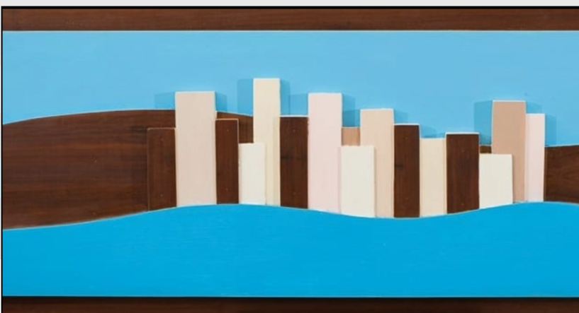
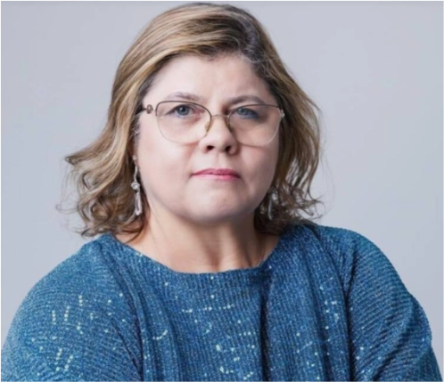

Ao longo de sua trajetória como artista visual, Luara Aquino desenvolveu uma produção sensível e conectada ao Cerrado, à memória e à urbanidade. Suas obras transitam entre o desenho, a pintura, a tridimensionalidade e a curadoria, sempre propondo diálogos com questões sociais, culturais e ambientais.

Luciélia de Aquino Ramos, também conhecida como Luara Aquino, é artista plástica e gestora cultural, natural de Itumbiara (GO) e radicada no Tocantins desde a criação do estado. Luara é pioneira do estado, tendo presença na Associação dos Pioneiros de Palmas (APPA). É mestra em Comunicação e Sociedade (UFT), bacharel em Artes Visuais (UFG) e especialista em Língua Portuguesa. Atua com destaque na cena cultural tocantinense, tendo implantado o Plano Municipal de Cultura, idealizado o Arraiá da Capital e a Feira do Bosque, além de contribuir para a criação do Espaço Cultural José Gomes Sobrinho.
Sua trajetória inclui também atuação como professora universitária e participação em conselhos culturais, como a Câmara do Patrimônio Cultural de Palmas. Em janeiro de 2025, foi nomeada presidente da Fundação Cultural de Palmas, onde vem fortalecendo as políticas culturais por meio do diálogo com a comunidade e parcerias institucionais.
Ler biografia completaCaminhe sala por sala como em uma galeria real: descubra cada obra, leia a placa técnica e, se quiser, leve uma peça ou impressão para casa.
Entrar no museu →